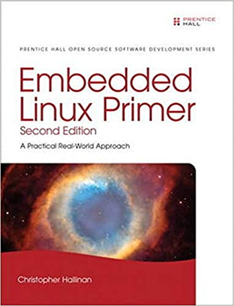
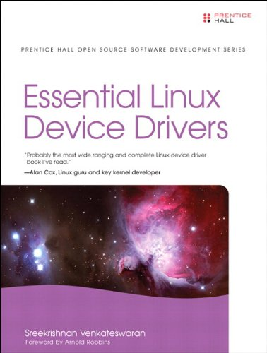
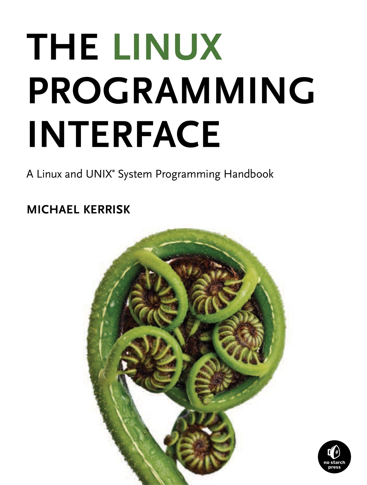
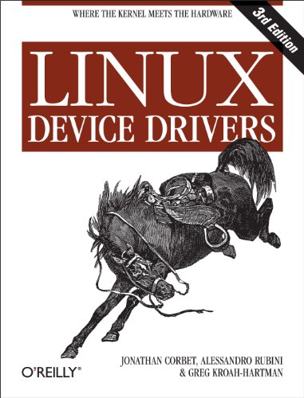
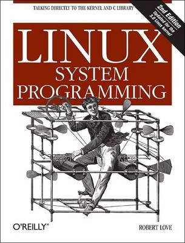
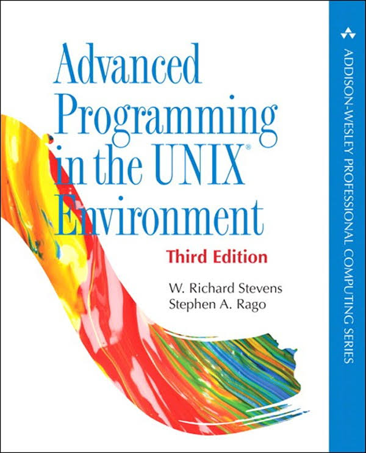
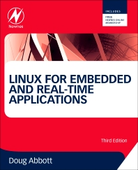
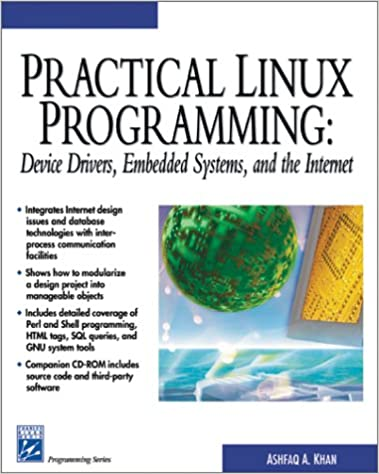
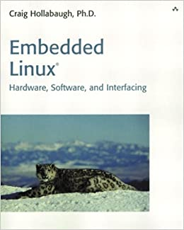

01 : Introduction
Bienvenue
- Module : MA-CSEL1
- Titre : MA-CSEL1 - Construction de Systèmes Embarqués sous Linux
- Intervenant
- Jacques Supcik (HEIA-FR / ISC)
- 18 étudiants inscrits
- 10 étudiants CS
- 6 étudiants TIC
- 2 étudiants TIN
- 5 plein temps
- 13 temps partiel
Communication
- e-mail : jacques.supcik@hefr.ch
- Teams/Telegram/Discord : TBD
Programme des cours
- Horaire : 14:35 - 17:00
- Salle de classe : HEIA-FR / C00.16
| Semaine | Date | Thème |
|---|---|---|
| 8/SP-1 | 25.2.2022 | Environnement Linux embarqué 1 |
| 9/SP-2 | 4.3.2022 | Environnement Linux embarqué 2 |
| 10/SP-3 | 11.3.2022 | Programmation noyau Linux 1 |
| 11/SP-4 | 18.3.2022 | Programmation noyau Linux 2 |
| 12/SP-5 | 25.3.2022 | Programmation noyau Linux 3 |
| 13/SP-6 | 1.4.2022 | Programmation noyau Linux 4 |
| 14/SP-7 | 8.4.2022 | Programmation système Linux 1 |
| 15/SP-8 | 15.4.2022 | Vendredi Saint |
| 16 | Pâques | |
| 17/SP-9 | 29.4.2022 | Programmation système Linux 2 |
| 18/SP-10 | 6.5.2022 | Programmation système Linux 3 |
| 19/SP-11 | 13.5.2022 | Programmation système Linux 4 |
| 20/SP-12 | 20.5.2022 | Optimisation système Linux 1 |
| 21/SP-13 | 27.5.2022 | Optimisation système Linux 2 |
| 22/SP-14 | 3.6.2022 | Mini projet intégré 1 |
| 23 | 10.6.2022 | Mini projet intégré 2 |
Déroulement des cours
Déroulement
- Travail personnel de préparation avant le cours
- Cours combiné: théorie et travail pratique
- Travail personnel après le cours
- Rédaction d’un rapport
Participation et collaboration
- Ne pas hésiter à participer et rendre le cours plus interactif et plus intéressant
- Ne pas hésiter à poser des questions
- Ne pas hésiter à partager vos propres expériences
- Ne pas hésiter à aider vos collègues
- Ne pas hésiter à expliquer ce que vous avez compris à vos collègues
- Ne pas hésiter à notifier des bugs au(x) professeur(s)
- Ne pas hésiter à regarder des solutions sur Internet
Objectifs du module
Au terme de ce module, les étudiant-e-s seront capable de :
- Choisir l’architecture (HW et SW) pour des systèmes embarqués pour Linux
- Mettre en place un environnement de développement pour Linux
- Choisir et configurer un boot-loader pour une cible donnée
- Choisir et configurer un système de fichiers pour Linux
- Choisir et configurer une distribution Linux pour une cible donnée
- Concevoir et développer des device drivers complexes sous Linux embarqué
- Concevoir et développer des applications sous Linux embarqué
Contenu du module
Environnement Linux embarqué
- Architecture générale de systèmes embarqués pour Linux
- Environnements de développement
- Outils de développement
- Création, génération et débogage d’applications
- Survol des boot-loaders
- Survol et configuration des systèmes de fichiers
- Survol des distributions Linux embarqué
Programmation noyaux Linux
- Programmation de modules noyau
- Développement et débogage d’un module noyaux
- Types de pilotes de périphériques
- Développement et débogage d’un pilote de périphériques
- Traitement des interruptions
- Paramétrage et configuration d’un pilotes de périphériques
Programmation système Linux
- Interface noyaux (system calls et bibliothèques)
- File I/O
- Gestion des processus et threads
- Communication inter processus (IPC, signaux, …)
- Mémoire virtuelle et accès aux périphériques par UIO
- Unix domain sockets
- IPC system V
- Caractéristiques de l’ordonnanceur
- Mesure de performance (profiling)
- Aspects temps-réel (processus/thread)
Mini-projet
- Mise en œuvre des concepts étudiés durant les 6 premières semaines
Rapport de laboratoire
Rapport
- Rapports de laboratoire par groupe de 2 étudiants, à rendre
- TBD : Environnement Linux embarqué et programmation noyau Linux
- TBD : Programmation système Linux et optimisation système Linux
- TBD : Mini projet intégré
- Format : fichier PDF avec les annexes dans un fichier .tar
- Langue : français, allemand ou anglais
Contenu (indicatif)
- En-tête (logos, établissement, titre, auteur, lieu et date, …)
- Par journée de cours (sujet / thème) entre 1 et 4 pages
- Résumé du laboratoire
- Réponse aux questions
- Synthèse sur ce qui a été appris/exercé
- Non acquis
- Acquis, mais à exercer
- Parfaitement acquis
- Remarques et choses à retenir
- Feedback personnel sur le laboratoire
- Annexes (références/littérature, code source/patches dans fichier tar)
Evaluation
Examen théorique
- Sous forme d’examen oral
- Deux thèmes tirés au sort
- 20’ de préparation (un résumé de 5 feuilles A4 recto-verso autorisé)
- 20’ de présentation au rétroprojecteur sur transparents avec questions des professeurs (le résumé n’est plus autorisé)
- Experts: le professeur du module + un professeur du domaine
Note finale du cours
- Examen théorique oral 65%
- Les rapports de laboratoire 35%
Littérature

Embedded Linux Primer, Second Edition
A Practical Real-World Approach
By Christopher Hallinan
November, 2010, 656 pages
ISBN-10: 0137017839 | ISBN-13: 978-0137017836
Linux Kernel Development
A thorough guide to the design and implementation of the Linux kernel
By Robert Love
July, 2010, 440 pages
ISBN-10: 0672329468 | ISBN-13: 978-0672329463

Essentials Linux Device Drivers
Probably the most wide ranging and complete Linux device driver book…
By Sreekrishnan Venkateswaran
April, 2008, 744 pages
ISBN-10: 0132396556 | ISBN-13: 978-0132396554

Writing Linux Device Drivers
A guide with exercices
By Jerry Cooperstein
September, 2009, 394 pages
ISBN-10: 1448672384 | ISBN-13: 978-1448672387

The Linux Programming Interface
A Linux and UNIX System Programming Handbook
By Michael Kerrisk
October, 2010, 1552 pages
ISBN-10: 1593272200 | ISBN-13: 978-1593272203

Building Embedded Linux Systems, Second Edition
Concepts, techniques, tricks, and traps
By Philippe Gerum, Karim Yaghmour, Jon Masters, Gilad Ben-Yossef
August 2008, 462 pages
ISBN 10: 0-596-52968-6 | ISBN 13: 9780596529680

Linux Device Drivers, Third Edition
By Jonathan Corbet, Alessandro Rubini, Greg Kroah-Hartman
February 2005, 636 pages
ISBN 10: 0-596-00590-3 | ISBN 13: 9780596005900
http://lwn.net/Kernel/LDD3/ (as PDF)
Understanding the Linux Kernel, Third Edition
By Daniel P. Bovet & Marco Cesati
November 2005, 944 pages
ISBN 10: 0-596-00565-2 0-596-00590-3 | ISBN 13: 978-0596005658

Linux System Programming
Talking Directly to the Kernel and C Library
By Robert Love
September 2007, 388 pages
ISBN 10: 0-596-00958-5 | ISBN 13: 9780596009588

Advanced Programming in the UNIX Environment
By W. R. Stevens, Stephen A. Rago
January 1992, 768 pages
ISBN-10: 0201563177 | ISBN-13: 978-0201563177

Linux for Embedded and Real-time Applications
By Doug Abboot
March, 2003, 254 pages
ISBN-10: 0750675462 | ISBN-13: 978-0750675468

Practical Linux Programming
Device Drivers, Embedded Systems, and the Internet
By Ashfaq A. Khan
February, 2002, 420 pages
ISBN-10: 1584500964 | ISBN-13: 978-1584500964

Embedded Linux
Hardware, Software, and Interfacing
By Craig Hollabaugh
March 2002, 432 pages
ISBN-10: 0672322269 | ISBN-13: 978-0672322266
Liens utiles
Noyau Linux
- Linux documentation
- Linux weekly news
- Linux kernel mailing list (FAQ)
- Kernel Newbies (glossaire, articles, présentations, …)
Projet ARM
Consultants et fabricants
Archives 2021/2022